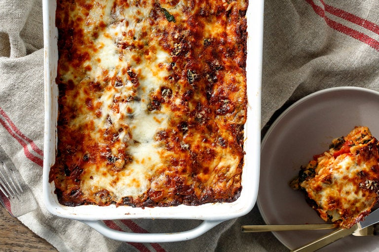

Easy Spinach Lasagna

This lasagna is the perfect weeknight dishes for vegetarians and meat-lovers alike. Gooey cheese covers a hearty spinach and tomato sauce base, making for a rich, vitamin-packed, and easy meal.
Ingredients
- 12 no-bake lasagna noodles
- 1 jar tomato sauce
- 2 tablespoons extra virgin olive oil
- 16 ounces bagged frozen spinach
- 1.5 cups ricotta
- 1.5 cups grated mozzarella
- 2 cups Parmesan
- 1 egg
- Pinch of nutmeg
- Salt and black pepper
Directions
- Pre-heat your oven to 400 degrees.
- Defrost the bag of spinach by running under warm water until all the clumps of spinach have loosened and the bag no longer feels cold.
Cut open the edge of the bag, dump the spinach into a strainer, and then use a potato masher to get rid of any excess water, blotting with a paper towel as need.
- In a small bowl, mix the ricotta with the nutmeg and egg.
- Grease a rectangular baking dish with olive oil, add a large dollop of tomato sauce, and use a spoon or your hands to spread it around the inside of the dish.
Spread three noodles along the bottom of the dish.
Top the noodles with a layer of tomato sauce, one-third of the spinach, and one-fourth each of the cheeses (including the ricotta mixture).
Season with salt and pepper.
- Repeat the layers twice, then top with the remaining noodles and cheeses.
The top should be covered with cheese—add more as needed.
- Cover the baking dish with aluminum foil, then bake for 20 minutes.
Remove the foil, then bake for an additional 10 minutes (or until lasagna is bubbling and the cheese is lightly browned).
Remove from the over and then let rest for a few minutes before serving.